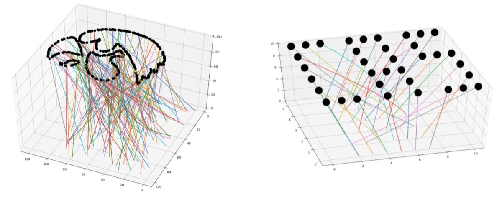
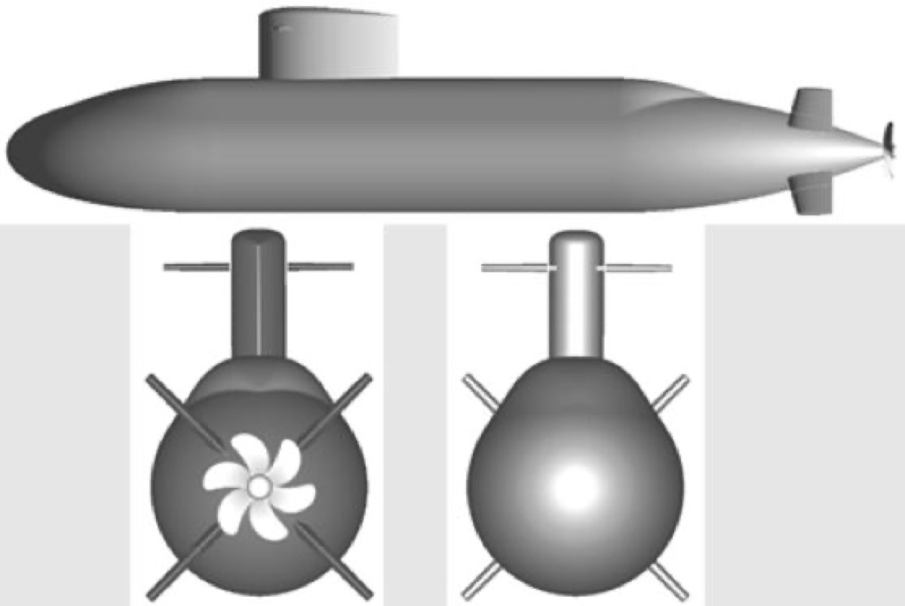
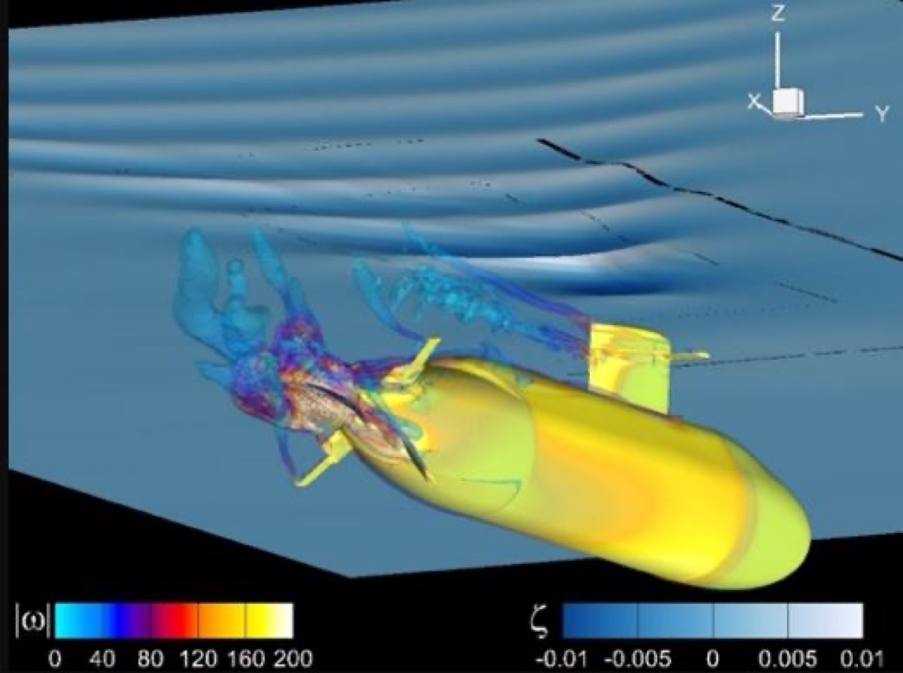
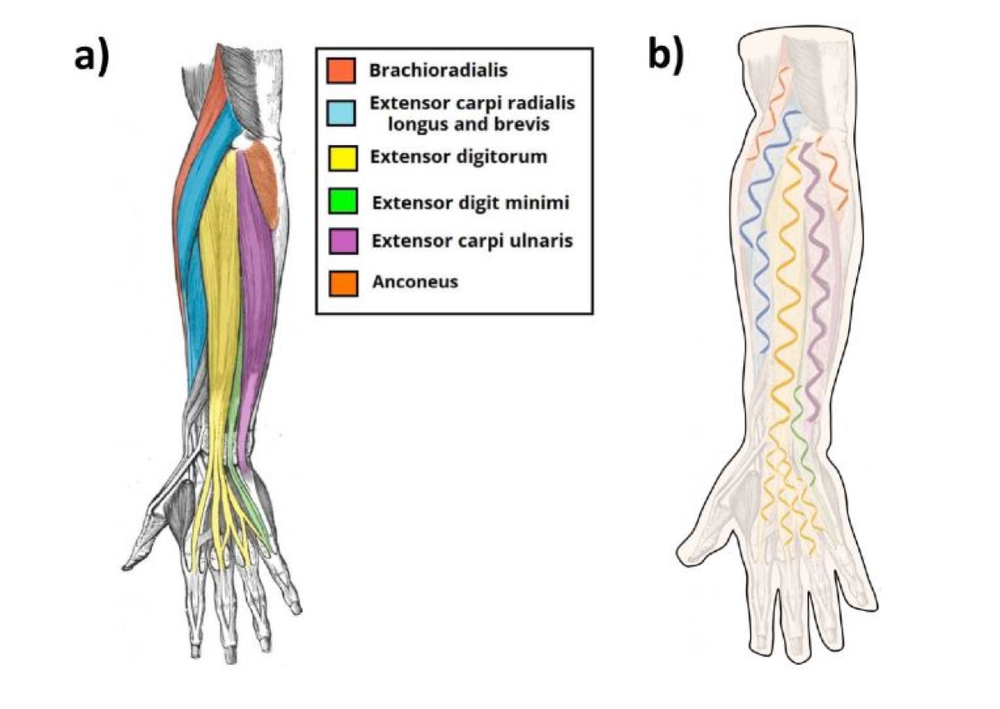
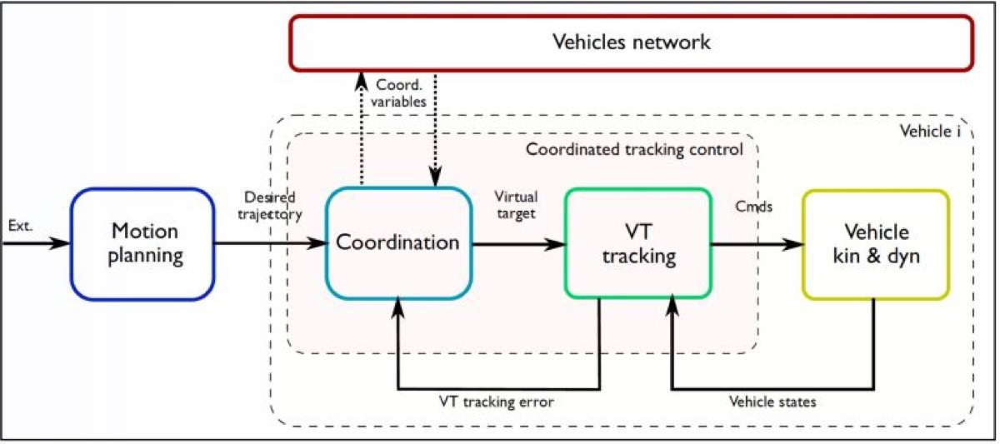

Research program
Resilient Autonomy
Mission-driven planning, control, and learning for autonomous systems.
I develop the theoretical and computational foundations that allow autonomous systems to operate safely, cooperatively, and reliably in complex, uncertain, and dynamic environments, including contested, congested, and human-inhabited ones.
Resilience is not a property of any single algorithm. A trajectory optimizer that ignores model error, a controller that cannot re-plan, or a team that fails when one communication link drops will each break the mission in a different way. My research therefore integrates planning, control, learning, and cooperation, with safety and resilience as the objectives that tie them together:
The common thread is a path from foundational control theory to systems that run on hardware. I test these ideas on aerial vehicles, underwater vehicles, multi-robot teams, and soft robots, much of it in the Cooperative Autonomous Systems Lab and with collaborators at IIHR–Hydroscience & Engineering, NASA, and partner universities.
Optimal control and motion planning
Many planning problems for autonomous vehicles are optimal control problems: find the trajectory that minimizes time, energy, or risk while respecting the vehicle’s dynamics and avoiding obstacles and other vehicles. These problems are infinite-dimensional and must be approximated before a computer can solve them.
My group develops direct methods that approximate trajectories with Bernstein (Bézier) polynomials. Their geometric properties make it cheap to check constraints such as minimum separation between vehicles over the whole trajectory, not just at sample points, which guarantees safety at low computational cost. We have proved that these approximations converge to the true optimal solution, and we have extended them to composite polynomials, uncertain environments, and surfaces for continuum robots.
With colleagues at the University of Bologna, we also use polynomial internal models for robust output regulation. A book collecting this work, Bernstein/Bézier Polynomials in Control, Estimation, and Planning, is forthcoming from Springer Nature in 2027.

Robust and adaptive control
A planned trajectory is only useful if the vehicle can follow it when the real system differs from its model. My group designs robust and adaptive controllers, including L1 adaptive control and adaptive reference management with model predictive control, that come with performance guarantees under disturbances, uncertainty, and changing dynamics. Two platforms drive much of this work.
Underwater vehicles
Underwater vehicles are hard to control at low speed, because control surfaces lose authority, and near the free surface, where suction forces and waves pull the vehicle up and pitch it bow-down. Together with researchers at IIHR–Hydroscience & Engineering, my group designs controllers for these conditions, including autopilots for depth and pitch in waves and adaptive reference management with model predictive control.
We derive vehicle models from computational fluid dynamics and test the controllers in REX, a University of Iowa code that resolves the hydrodynamics and body motion together, so the controller is evaluated against realistic physics rather than a simplified model. Recent work extends these ideas to a biomimetic robotic fish. Underwater vehicles are also the main testbed for my NSF project on safe AI for decision making and motion planning, described under learning-enabled autonomy.


Soft robots and artificial muscles
With Caterina Lamuta and her SMMS Lab, my group models and controls robots driven by twisted and coiled artificial muscles (TCAMs). These fibers are cheap, light, strong, and need very little voltage, which makes them attractive for wearable and bioinspired devices, but their behavior is nonlinear and hard to predict.
We build physics-based models using Cosserat rod theory, which earned a 2026 Smart Materials and Structures Best Paper Award, and use them for robust control and path planning. Applications include an octopus-inspired soft arm, a wrist rehabilitation exoskeleton, a soft end-effector for in-space assembly, and powered orthotic devices for the upper limb.

Learning-enabled autonomy
Optimal control gives trajectories with clear guarantees, but solving the optimization online can be too slow for fast-changing missions. I use learning to close that gap without discarding the structure that makes the guarantees possible. Transformer networks trained to predict Bernstein polynomial trajectories return near-optimal solutions in real time, and we have applied the same idea to leg-based trajectory generation for autonomous aircraft near airports. In PolyFusion (CoRL 2026), we combine robot learning with Bernstein polynomials to produce collision-free motions.
My NSF project “Engineering Safe Artificial Intelligence for Autonomous Vehicle Decision Making and Motion Planning” (2026–2029) asks how to make learned components behave predictably inside a closed-loop system, with the goal of faster decision making and route planning for autonomous underwater vehicles. Experiments are planned at the IIHR Wave Basin and two area lakes.
Cooperative autonomous systems
A team of vehicles can be more robust, reliable, and efficient than a single heavily equipped vehicle, but only if the team can coordinate despite vehicle failures, faulty or intermittent communication, and complex environments. My work integrates three pieces into one framework with guarantees of safety and robustness:
This work began in collaboration with the University of Illinois Urbana-Champaign, the Naval Postgraduate School, and Instituto Superior Técnico in Lisbon, and has been applied to cooperative road search, target monitoring, and localization of avalanche victims.


Human-autonomy teaming
Autonomous systems rarely operate alone: they share airspace, roads, and workspaces with pilots, operators, and bystanders. My work in this area asks how an autonomous system should plan and act so that the people around it can anticipate its behavior and work with it.
Autonomy in the airspace
As autonomous aircraft become common, they must share airspace with piloted aircraft, especially near airports. With NASA, my group develops trajectory optimization for aircraft approaching and leaving airports, including pilot-centric planning for autonomous final approach and learning-based trajectory generation that runs in real time. With NSF support, we are also integrating drones and crewed aircraft near airports.
People and nearby drones
Earlier work with collaborators at the University of Illinois Urbana-Champaign used virtual-reality environments to study how people interact with small multirotors operating close to them, including in a residential setting.
Software
BeBOT (Bernstein/Bézier Optimal Trajectories) is my group’s open-source toolkit for generating optimal trajectories for one or many autonomous vehicles. It is available in Python, with MATLAB, C++, and CasADi versions. More code is on the lab GitHub.
Sponsors
My research has been supported by:
- National Science Foundation (NSF)
- Office of Naval Research (ONR)
- NASA
- NASA Iowa Space Grant Consortium
- Air Force Research Laboratory (AFRL)
- Amazon
- Automotive Research Center, University of Michigan